MINECRAFT
O que é Minecraft?
 Minecraft é um dos jogos de sandbox mais icônicos e influentes de todos os tempos, oferecendo aos jogadores liberdade para construir, explorar e interagir em um vasto mundo gerado proceduralmente. Desde seu lançamento em 2009, o jogo se tornou um fenômeno global, definindo um novo padrão na indústria de videogames e atraindo uma enorme comunidade de jogadores de todas as idades. Com sua jogabilidade inovadora e o estilo visual característico de blocos pixelizados, Minecraft continua a encantar e inspirar milhões ao redor do mundo como uma plataforma para criatividade e aventuras sem limites. Open AI Chat GPT
Minecraft é um dos jogos de sandbox mais icônicos e influentes de todos os tempos, oferecendo aos jogadores liberdade para construir, explorar e interagir em um vasto mundo gerado proceduralmente. Desde seu lançamento em 2009, o jogo se tornou um fenômeno global, definindo um novo padrão na indústria de videogames e atraindo uma enorme comunidade de jogadores de todas as idades. Com sua jogabilidade inovadora e o estilo visual característico de blocos pixelizados, Minecraft continua a encantar e inspirar milhões ao redor do mundo como uma plataforma para criatividade e aventuras sem limites. Open AI Chat GPT
Minecraft foi criado por Markus "Notch" Persson, um desenvolvedor de jogos sueco. Ele inicialmente desenvolveu o jogo de forma independente e lançou uma versão alpha em maio de 2009, antes de fundar a Mojang Studios para continuar o desenvolvimento do jogo. Markus Persson é amplamente reconhecido como o criador e principal visionário por trás do conceito inicial e da primeira versão de Minecraft. Open AI Chat GPT
Explore e Sobreviva
Além de ser um jogo de construção, Minecraft é uma experiência de exploração imersiva em um mundo vasto, repleto de segredos intrigantes e perigos inesperados. Os jogadores têm à sua disposição uma gama diversificada de biomas para explorar: desde florestas exuberantes e vastas planícies até montanhas imponentes, oceanos profundos e cavernas misteriosas. Cada um desses ambientes oferece seus próprios desafios únicos e tesouros ocultos, incentivando os aventureiros a se aventurarem em busca de novas descobertas. Open AI Chat GPT
No entanto, essa jornada não é isenta de perigos. Durante a noite, o mundo de Minecraft se transforma, e criaturas sombrias emergem das sombras para desafiar a coragem dos exploradores. De creepers a esqueletos, e de zumbis a aranhas gigantes, monstros de todas as formas e tamanhos vagam livremente, prontos para atacar os desavisados. Assim, os jogadores devem estar preparados para lutar pela própria sobrevivência, utilizando suas habilidades e recursos para enfrentar as ameaças noturnas e proteger suas construções e suas vidas. A cada nascer do sol, uma nova oportunidade se apresenta para explorar e expandir, criando uma dinâmica de desafio constante que atrai milhões de jogadores ao redor do mundo. Open AI Chat GPT
Como funciona?
Colete Recursos

Chegou a hora de colocar mãos à obra e mergulhar na vastidão do ambiente que te rodeia no mundo de Minecraft. Utilize sua astúcia e habilidades para explorar os biomas variados, desde as exuberantes florestas até os picos nevados das montanhas, coletando uma infinidade de materiais preciosos ao longo do caminho. Seja cortando árvores para obter madeira, minerando rochas para extrair minerais valiosos ou coletando plantas e animais para diversos fins, cada ação é uma oportunidade de criar e inovar.
A experiência de coleta de materiais vai além da simples obtenção de recursos; é uma jornada de descoberta e aprendizado. Ao explorar o mundo ao seu redor, você não só adquire os elementos necessários para suas construções, mas também aprende sobre a ecologia e os sistemas naturais que regem o mundo de Minecraft. Cada árvore cortada, cada bloco quebrado, é uma oportunidade para expandir seu conhecimento e habilidades.
Portanto, não subestime o poder da coleta de materiais. Ao cortar árvores, você não apenas obtém madeira para suas construções, mas também contribui para o ciclo natural do ambiente, permitindo o crescimento de novas árvores e a renovação dos recursos. Assim, cada ação que você realiza é uma peça crucial no intricado quebra-cabeça da sobrevivência e prosperidade no mundo de Minecraft. Open AI Chat GPT
Sobreviva à Noite

Em um mundo repleto de perigos e mistérios como o de Minecraft, é sempre prudente manter uma distância segura das criaturas que vagueiam pelos terrenos. Cada esquina esconde possíveis ameaças, e nunca se pode prever com certeza o que está à espreita nas sombras.
Evitar o imprevisível é uma estratégia sábia para garantir a própria segurança e preservar os recursos conquistados com tanto esforço. Criaturas hostis como creepers, esqueletos e zumbis podem surgir a qualquer momento, representando uma ameaça iminente para os desavisados. Portanto, é fundamental manter os sentidos alertas e evitar confrontos desnecessários.
Além disso, ao se manter distante das criaturas, os aventureiros têm a oportunidade de explorar o ambiente com mais tranquilidade, permitindo uma imersão mais profunda nas maravilhas e desafios que o mundo de Minecraft oferece. Ao evitar encontros perigosos, os jogadores podem focar em suas metas e objetivos sem interrupções indesejadas.
Assim, lembre-se sempre: é melhor prevenir do que remediar. Mantenha-se atento aos arredores e mantenha uma distância segura das criaturas hostis. Afinal, em um mundo cheio de incertezas, a cautela é a melhor aliada para a sobrevivência. Open AI Chat GPT
Construa coisas

Explore todo o potencial do pó de minério de redstone e desbloqueie um mundo de possibilidades para aprimorar suas criações em Minecraft. Este recurso versátil não apenas adiciona uma dimensão extra às suas construções, mas também oferece a oportunidade de dar vida e potência às suas invenções de maneiras inovadoras e emocionantes.
Com o pó de minério de redstone, você pode criar dispositivos elétricos complexos, como circuitos de porta lógica, sistemas de automação e mecanismos de defesa avançados. Desde portas automáticas e sistemas de iluminação inteligentes até catapultas e pistões automáticos, as possibilidades são praticamente ilimitadas.
Além disso, o pó de redstone também pode ser usado para melhorar a estética e a funcionalidade de suas criações, adicionando efeitos especiais e interativos. Por exemplo, você pode criar displays de contagem regressiva, efeitos de partículas personalizados e até mesmo dispositivos de comunicação entre jogadores.
Portanto, não subestime o poder do pó de minério de redstone. Ao dominar este recurso fundamental, você pode elevar suas construções a um novo patamar de criatividade e engenhosidade, transformando o mundo de Minecraft em seu próprio playground de inovação e descoberta. Open AI Chat GPT
O Jogo
Mobs
O que são os Mobs?
Criaturas (ou Mobs) são entidades vivas que locomovem-se no ambiente. O termo "mob" é curto para "mobile" (aquilo que se move, móvel). Diferentes tipos de criaturas geralmente possuem inteligência artificial e saques únicos. Abaixo, teremos classes de mobs / criaturas:
Criaturas Passivas
Essas criaturas não atacam o jogador e podem ser úteis para coleta de recursos ou companheirismo.
-
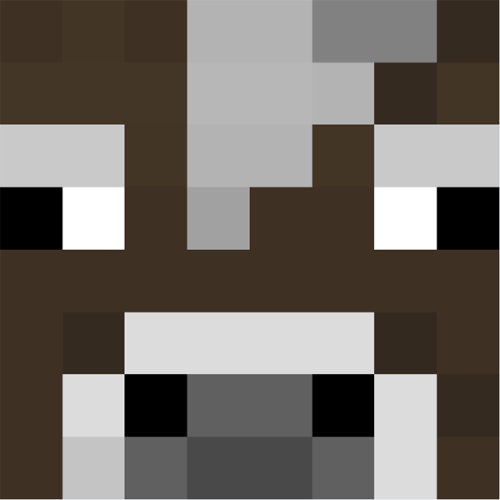
- Vaca (Cow): Fornece leite e carne quando abatida. 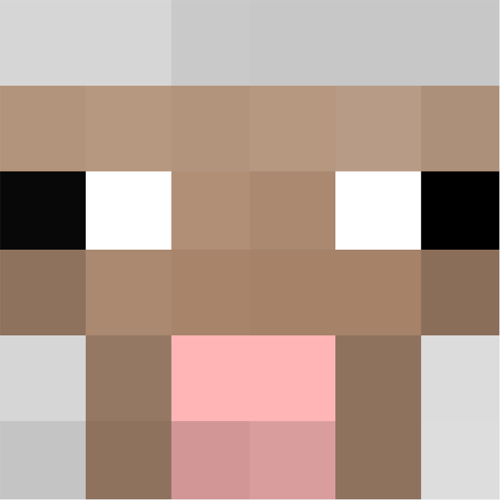
- Ovelha (Sheep): Pode ser tosada para lã, útil para criar camas e outros itens. 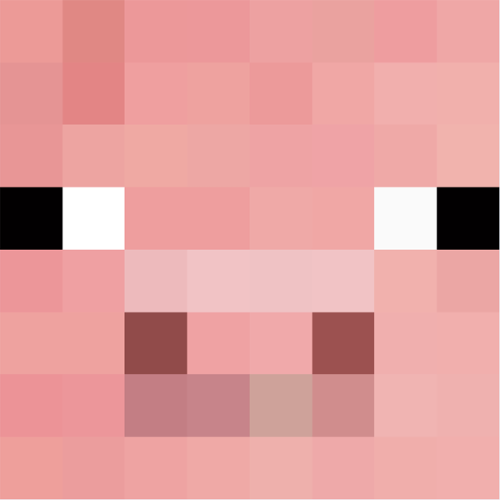
- Porco (Pig): Fonte de carne de porco crua. 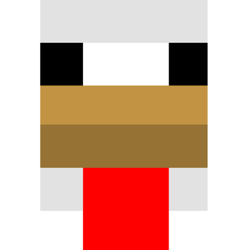
- Galinha (Chicken): Fornece ovos e carne de galinha. 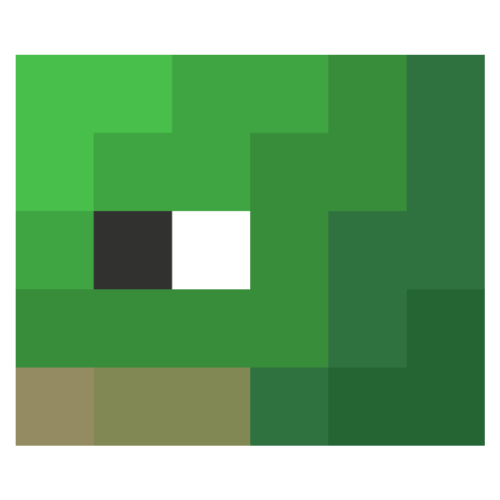
- Tartaruga (Turtle): Encontra-se em praias, põe ovos que geram filhotes, e deixa escamas usadas para criar capacetes de tartaruga, que ajudam a respirar debaixo d'água.
Criaturas Neutras
Essas criaturas só atacam o jogador se forem provocadas.
-
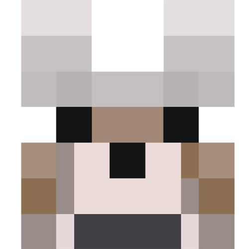
- Lobo (Wolf): Pode ser domesticado como cão, mas ataca se for atingido. 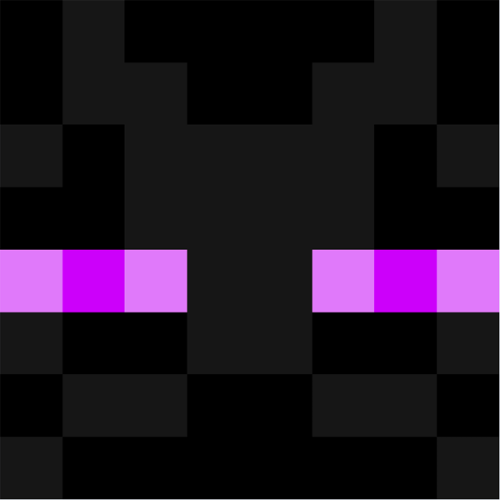
- Enderman: Ataca se o jogador fizer contato visual direto ou o atacar. 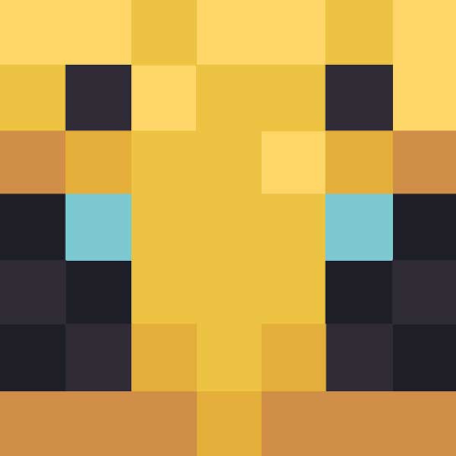
- Abelha (Bee): Ataca se for provocada ou se a colmeia for destruída. 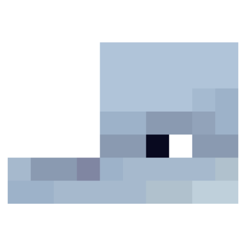
- Golfinho (Dolphin): Geralmente amigável, mas atacará se for ferido.
Criaturas Hostis
Essas criaturas atacam o jogador à primeira vista.
-
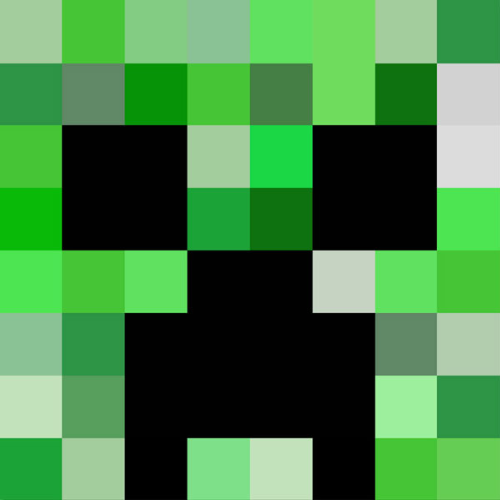
- Creeper: Explode perto do jogador, causando danos severos. 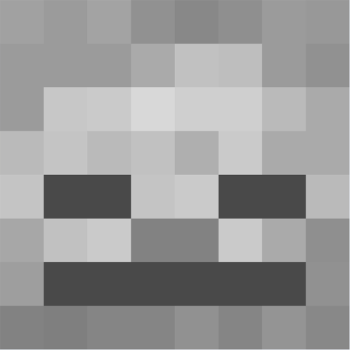
- Esqueleto (Skeleton): Ataca à distância com um arco e flechas. 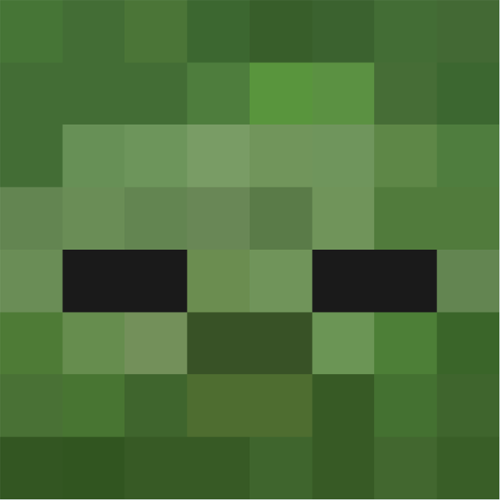
- Zumbi (Zombie): Persegue e ataca o jogador à curta distância. 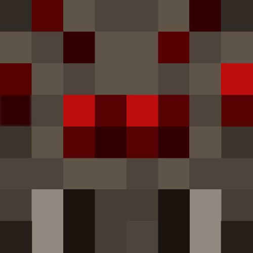
- Aranha (Spider): Ataca durante a noite ou em áreas escuras. 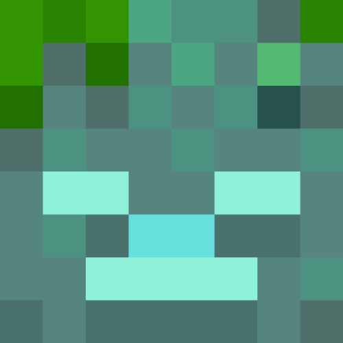
- Zumbi Afogado (Drowned): Zumbis que surgem na água e podem atacar com tridentes.
Criaturas Chefes
Esses são inimigos extremamente poderosos que representam um grande desafio.
-
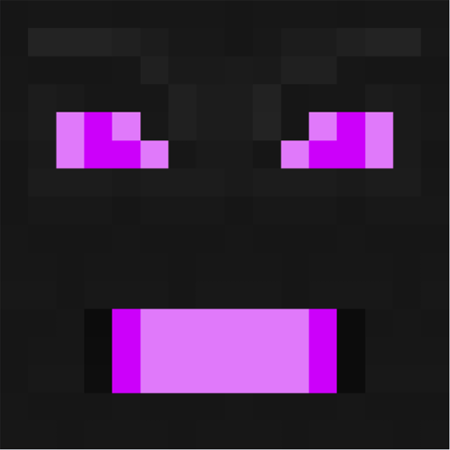
- Ender Dragon: O chefe final do jogo, encontrado na dimensão do Fim (End). 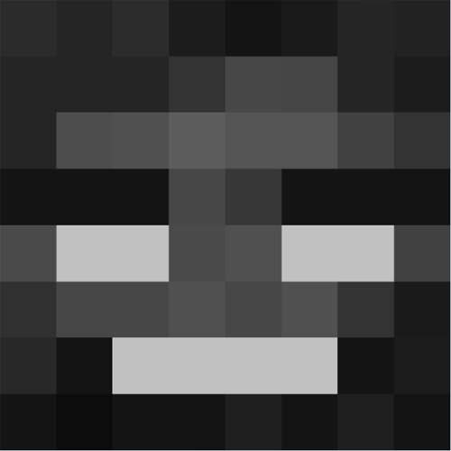
- Wither: Criado pelo jogador ao construir uma estrutura específica e derrotar as cabeças de Wither. Ataca tudo ao seu redor. 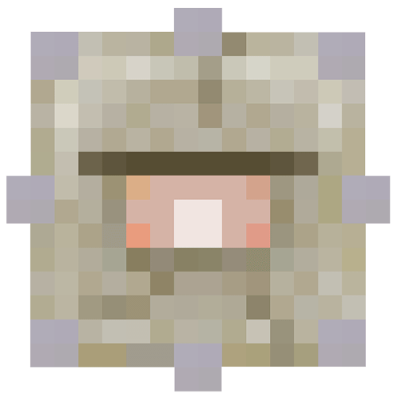
- Guardião Ancião (Elder Guardian): Encontra-se nos templos oceânicos e é uma versão mais forte do Guardião.
Biomas
Biomas em Minecraft são áreas distintas do mundo que possuem características próprias, como tipo de terreno, vegetação e clima. Cada bioma tem seu próprio conjunto de blocos, recursos naturais, fauna e flora. Eles influenciam o tipo de mobs que aparecem e os recursos disponíveis.
Atualmente, em Minecraft 1.21, há mais de 70 biomas diferentes. A lista inclui biomas em diferentes categorias, como: Floresta, Desertos e Planícies, Biomas Frios, Biomas Úmidos, Montanhas e Colinas.
Cada bioma tem características e recursos distintos, tornando a exploração variada e interessante. Aqui teremos alguns desses diversos biomas
Floresta
Floresta de Bambu

Floresta Escura
Deserto

Planícies
Badlands
Taiga
Planícies de Neve

Montanhas Geladas
Pântano
Manguezal
Campo de Cogumelo
Montanhas
Oceanos
Savana

Floresta das Flores
O Nether
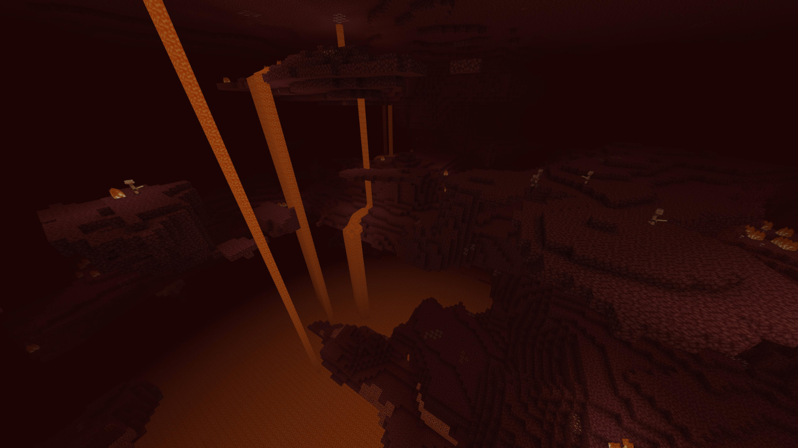O Nether é uma das dimensões mais desafiadoras e intrigantes do mundo de Minecraft. Acessado através de um portal feito de obsidiana e ativado com pederneira e isqueiro, o Nether representa uma versão infernal do jogo, cheia de perigos e mistérios que aguardam aqueles corajosos o suficiente para explorá-lo.
O Nether é caracterizado por seu ambiente sombrio, composto principalmente por vastas quantidades de netherrack, um bloco inflamável que cobre a maior parte do terreno. A dimensão é preenchida com rios e lagos de lava, tornando a navegação extremamente perigosa. A iluminação é baixa e não existe um ciclo de dia e noite, criando uma atmosfera constante de tensão e perigo.
O terreno também é composto por vastos oceanos de lava, terrenos irregulares, fortalezas antigas, e biomas distintos como as Florestas Carmesim e Deformadas, o Vale das Almas e as Planícies de Basalto.
Além da netherrack, o Nether é repleto de outros blocos únicos, como a areia das almas, que desacelera os jogadores, e o basalto, encontrado em formações íngremes nos biomas de deltas de basalto. Esses materiais, juntamente com a lava omnipresente, fazem do Nether um lugar perigoso para aqueles que não estão preparados.
Os jogadores encontram mobs hostis como Ghasts, Piglins, Blaze e Wither Skeletons, que tornam a exploração desafiadora. No entanto, o Nether também oferece recursos valiosos, como Netherite, a Ancient Debris e os Bastions Remnants, que recompensam os jogadores corajosos.
Apesar de ser um lugar arriscado, o Nether é essencial para o progresso no jogo, especialmente para quem busca enfrentar o Ender Dragon, já que alguns itens necessários para acessar o The End são encontrados nessa dimensão, como o Blazerod, dropado pelo Blaze quando morre.
The End
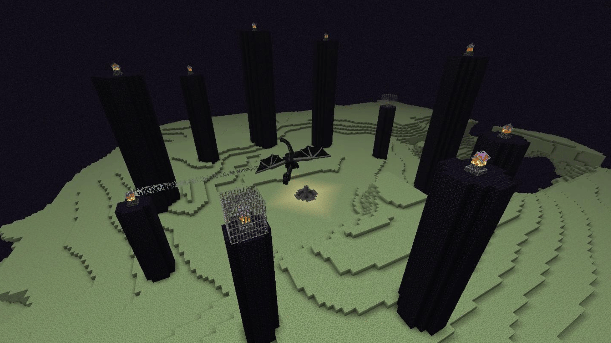O The End é a dimensão final e uma das mais enigmáticas de Minecraft. É acessado por meio de um portal que só pode ser encontrado nas profundezas de uma fortaleza, utilizando Olhos de Ender para ativá-lo. Entrar no The End é uma jornada sem volta até que o jogador derrote o Ender Dragon, o chefe final do jogo.
Essa dimensão é composta principalmente de vastas ilhas flutuantes feitas de End Stone, suspensas em um vazio aparentemente infinito. A ilha central é o coração do The End, onde o Ender Dragon aguarda, protegido por altos pilares de obsidiana que sustentam cristais de cura. O confronto com o dragão é um dos maiores desafios de Minecraft, exigindo estratégia e habilidade para destruir os cristais e derrotar a criatura.
Após a vitória sobre o Ender Dragon, o jogador desbloqueia um portal de saída e ganha acesso às cidades do End, conhecidas como End Cities. Essas estruturas imponentes, muitas vezes guardadas por Shulkers, contêm tesouros raros, como a Elytra, uma asa que permite ao jogador planar e explorar o mundo de uma maneira única. Além disso, há os End Ships, navios flutuantes que abrigam alguns dos itens mais cobiçados do jogo.
No entanto, a exploração do The End é repleta de perigos, especialmente devido à abundância de Endermen, que se tornam hostis se provocados. Para muitos jogadores, o The End não é apenas o último desafio de Minecraft, mas também uma oportunidade para obter recursos raros e valiosos que podem transformar completamente a experiência no jogo. A dimensão representa tanto o fim quanto um novo começo, abrindo portas para aventuras ainda mais grandiosas.
| Plataformas | Java | Bedrock | |
|---|---|---|---|
| Windows/Mac/Linux |  |
|
|
| Nintendo | |
|
|
| Xbox/Playstation |  |
|
|
| Android/iOS | |
|
Tipos de servidores
Online

Online
Conecte-se e jogue com jogadores de todo o mundo, estejam onde estiverem.
Mundos
Jogue em um mundo personalizado com outros jogadores.
Servidores
Descubra servidores geridos pela comunidade, cheios de atividades e lar de milhares de jogadores.
Realms

Realms
Jogue localmente ou online no seu próprio servidor, um mundo online e persistente, armazenado com segurança na nuvem.
Realms Plus
Obtenha acesso instantâneo a um catálogo com mais de 150 itens de conteúdo do Passe do Marketplace, com novidades divertidas adicionadas todos os meses.
Java Realms
Crie e gerencie seu próprio servidor privado com até 10 amigos.
Coop

Online
Jogue em modo cooperativo local com amigos e familiares no seu dispositivo.
Mundos
Jogue em um mundo personalizado com outros jogadores em uma plataforma compartilhada ou por LAN.
Servidores
Jogue com amigos e familiares em um servidor privado local em dispositivos separados.